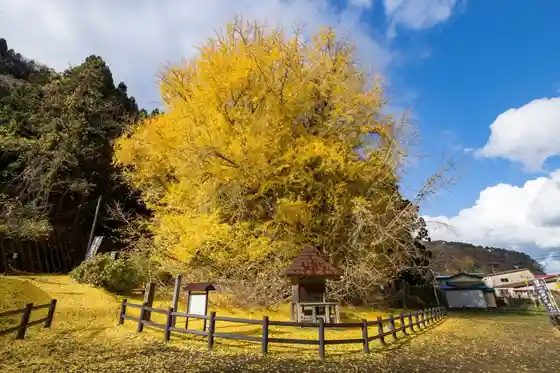
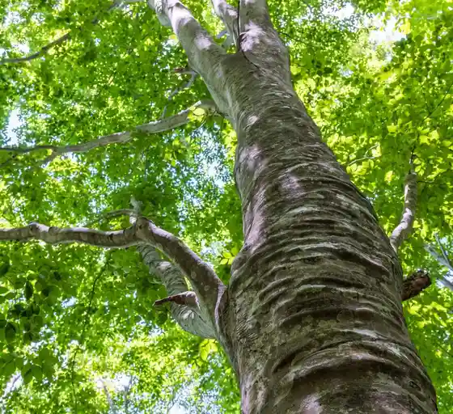
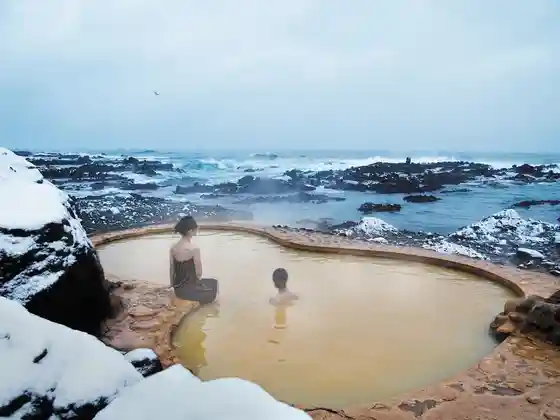
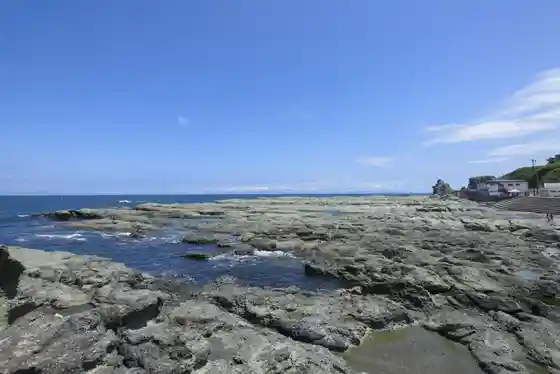

Juni Mizumi / Aoike
Fukaura, Aomori · 0173-74-4412 · Official / source link
Kita Kingasawa no Oicho (Bigguiero)
Fukaura, Aomori · 0173-74-4412 · Official / source link

Sekai Isan Shirakami Sanchi
Fukaura, Aomori · 0172-85-2810 · Official / source link

Koganezaki Furo Fu Shi Onsen
Fukaura, Aomori · 0173-74-3500 · Official / source link

Senjojiki Coast
Fukaura, Aomori · 0173-74-4412 · Official / source link

Oiwa
Fukaura, Aomori · 0173-74-4412 · Official / source link
Roadside Station Fukaura (Kasoseika Yaki Village)
Fukaura, Aomori · 0173-76-3660 · Official / source link
Nippon Kyanion
Fukaura, Aomori · 0173-74-4412 · Official / source link
JR Hyo Ki Eki
Fukaura, Aomori · 0173-74-4412 · Official / source link
Juni Mizumi Eki Tourist Information
Fukaura, Aomori · 0173-77-3000 · Official / source link
Mori no Bussan Kan Kyororo
Fukaura, Aomori · 0173-77-2781 · Official / source link
Yuhi Coast
Fukaura, Aomori · 0173-74-4412 · Official / source link
Engaku Tera
Fukaura, Aomori · 0173-74-2029 · Official / source link
Fuai Se Coast
Fukaura, Aomori · 0173-74-4412 · Official / source link
Futsu Tsubo no Ike
Fukaura, Aomori · 0173-74-4412 · Official / source link
Bussan Kan Korobokkuru
Fukaura, Aomori · 0173-82-0875 · Official / source link
Dazai no Yado Fukaura Literature Museum
Fukaura, Aomori · 0173-84-1070 · Official / source link
Gyo Go Saki Coast
Fukaura, Aomori · 0173-74-4412 · Official / source link
Moriyama Coast
Fukaura, Aomori · 0173-74-4412 · Official / source link
Henashi Saki Lighthouse
Fukaura, Aomori · 0173-74-4412 · Official / source link
Ohazama Etsu Kage no Hama Coast
Fukaura, Aomori · 0173-74-4412 · Official / source link
Kazamachi Chi Kan
Fukaura, Aomori · 0173-74-3553 · Official / source link
Benten Shima
Fukaura, Aomori · 0173-74-4412 · Official / source link
Kan no Sugi
Fukaura, Aomori · 0173-74-4412 · Official / source link
Henashi Daichi
Fukaura, Aomori · 0173-74-4412 · Official / source link
Juni Mizumi Su no Haiku
Fukaura, Aomori · 0173-77-3311 · Official / source link
Fukaura Folk History Museum Art Museum
Fukaura, Aomori · 0173-74-3882 · Official / source link
Juni Mizumi Su no Haiku
Fukaura, Aomori · 0173-77-3311 · Official / source link